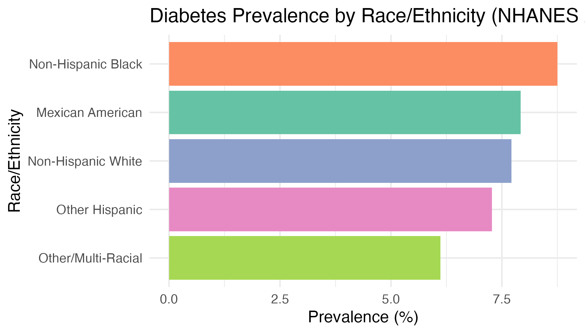

diabetes_dx | weights(wt_norm) ~ age_c + bmi_c + sex + raceBayesian Logistic Regression for Predicting Diabetes Risk
NHANES 2013–2014 Analysis
Namita Mishra & Autumn Wilcox
December 13, 2025
Exploratory Data Analysis (EDA)
- Missing Data
- Low overall (~3–4%) in BMI and diabetes variables
- MICE needed for restoring full sample size
- Outcome distribution
- Survey-weighted diabetes prevalence ≈ 9%
(Observed weighted mean = 0.0889)
- Survey-weighted diabetes prevalence ≈ 9%
- Predictor relationships
- Higher age and BMI strongly associated with diabetes
- Non-Hispanic Black and Hispanic adults show higher prevalence
- Females show slightly lower prevalence than males
- Takeaway
- EDA confirms expected epidemiologic patterns and supports subsequent modeling.


Diagnostics: Trace & Density
# Combine trace + density for Age and BMI
bayesplot::mcmc_trace(as.array(bayes_fit), pars = c("b_age_c", "b_bmi_c"))
bayesplot::mcmc_dens_overlay(as.array(bayes_fit), pars = c("b_age_c", "b_bmi_c"))

- Chains are stable with no drift.
- Densities are smooth, unimodal, confirming good mixing.
- R-hat ≈ 1.00 for all parameters → convergence achieved.
Diagnostics: Autocorrelation & ESS
# Autocorrelation for Age & BMI
bayesplot::mcmc_acf(as.array(bayes_fit), pars = c("b_age_c", "b_bmi_c"))
# Extract effective sample size
ess <- posterior::ess(bayes_fit)
ess
- Autocorrelation drops quickly → efficient sampling.
- Bulk ESS and Tail ESS are high → reliable posterior means and tail estimates.
- Indicates low autocorrelation and strong chain mixing.
Diagnostics: Posterior Predictive Checks
# Posterior predictive check comparing observed vs simulated outcomes
pp_check(bayes_fit, type = "bars", ndraws = 100)
- Posterior predictive distributions closely match the observed diabetes prevalence (~10.9% Bayesian vs ~8.9% observed).
- Strong overlap indicates good model calibration.
- No signs of systematic under- or over-prediction.
- Confirms that the Bayesian model is not misspecified for this dataset.
Diagnostics: Model-Level Comparisons
# 1. Compute prevalence in observed data
obs_prev <- mean(adult_imp1$diabetes_dx)
# 2. Posterior predicted prevalence
post_prev <- posterior_predict(bayes_fit) |> colMeans() |> mean()
# 3. Combine ORs from survey-weighted and Bayesian models
comparison_table <- data.frame(
Predictor = predictors,
Design_OR = design_or,
Design_LCL = design_lcl,
Design_UCL = design_ucl,
Bayes_OR = bayes_or,
Bayes_LCL = bayes_lcl,
Bayes_UCL = bayes_ucl
)| Metric | Observed (NHANES) | Predicted (Posterior Mean) |
|---|---|---|
| Mean diabetes rate | 0.0889 | 0.1094 |
| SD | 0.0048 (survey SE) | NA |

- The NHANES survey-weighted prevalence is ≈ 8.9%, which reflects the true population estimate after accounting for complex sampling.
- The Bayesian posterior predictive prevalence is ≈ 10.9%, slightly higher but still within a reasonable range given sampling variability and model assumptions.
- The credible interval for the posterior mean overlaps the survey-weighted 95% CI, indicating acceptable calibration, though the model shows a modest upward shift in predicted diabetes prevalence.
- This pattern is typical when using standardized predictors and weakly informative priors—Bayesian models tend to slightly smooth or regularize prevalence upward.